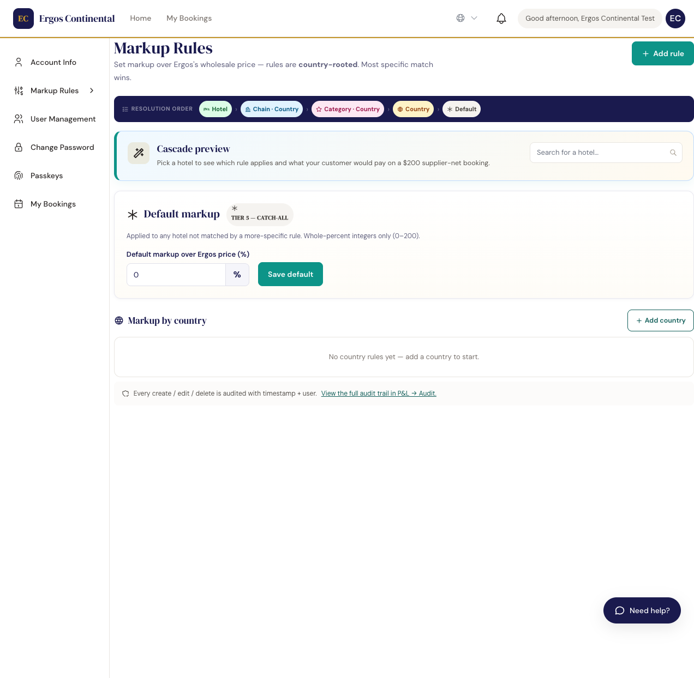
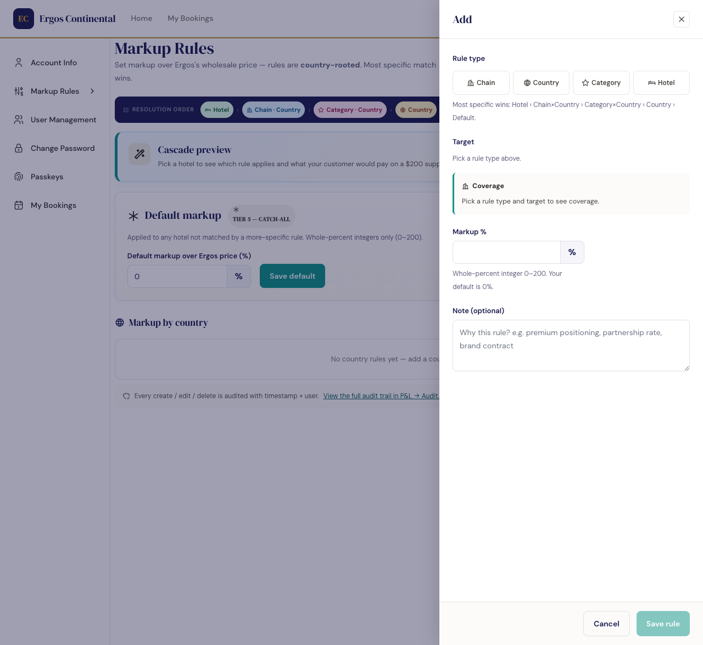
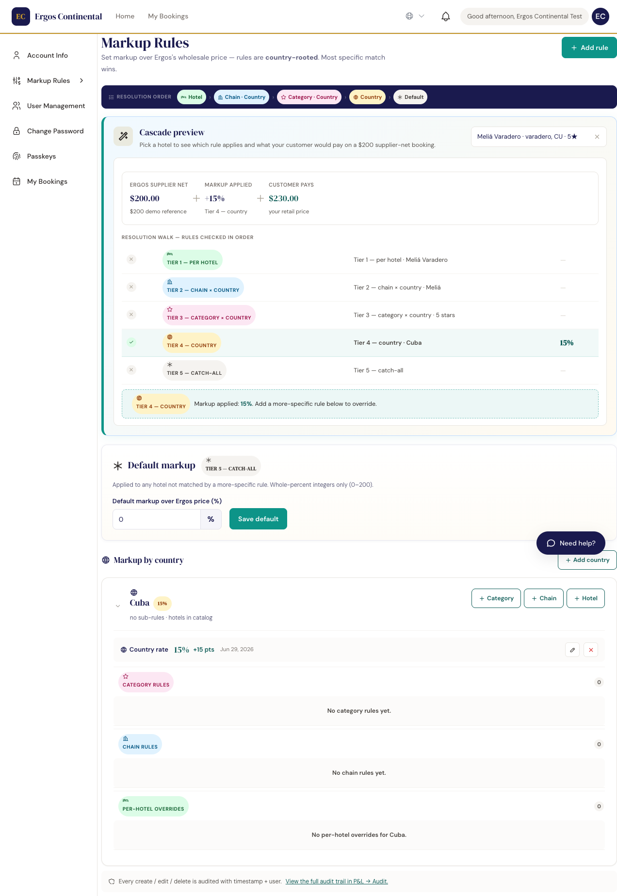
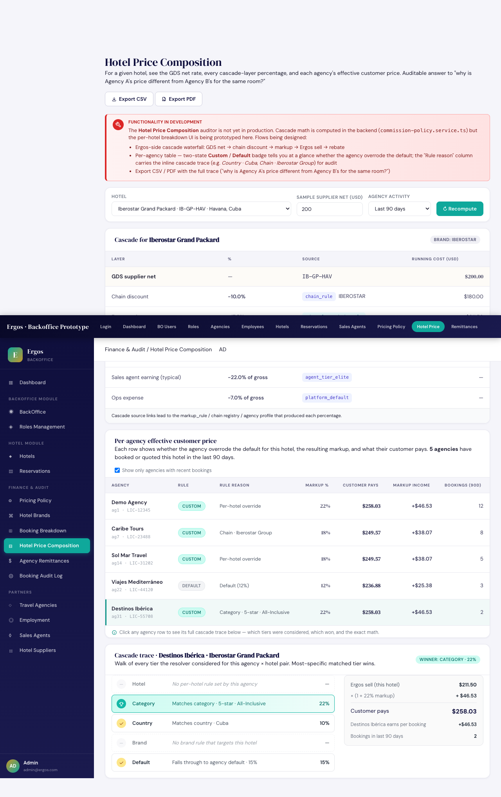

What this document covers. Travel agencies set the markup they earn over Ergos's wholesale price (the Ergos sell) using a 5-tier cascade: Hotel › Chain·Country › Category·Country › Country › Default. The most-specific matching rule wins. Chain and Category rules are always scoped to a country — that is what "country-rooted" means. This guide explains the tiers, the resolver, where it's edited, where it's audited, and the booking-time snapshot. Live — shipped 2026-06-29
Qué cubre este documento. Las agencias de viajes configuran el markup que ganan sobre el precio mayorista de Ergos (el Ergos sell) usando una cascada de 5 niveles: Hotel › Cadena·País › Categoría·País › País › Default. La regla más específica que coincida gana. Las reglas de Cadena y Categoría siempre están limitadas a un país — eso es lo que significa "country-rooted". Esta guía explica los niveles, el resolutor, dónde se edita, dónde se audita y la instantánea al momento de la reserva. En producción — lanzado el 2026-06-29
1. Why a cascade replaced the single default 1. Por qué una cascada reemplazó al valor por defecto único
Originally each agency had one number, TravelAgency.defaultMarkupPct, applied uniformly to every booking. That model could not express "12% on Meliá hotels, but 18% on Iberostar in Cuba, and 22% on the specific Iberostar Grand Packard property." Configuring rules per individual hotel across an inventory of approximately 100,000 hotels is not viable. The cascade lets each agency place one rule at the broadest level that fits its commercial strategy, and override more specifically only where needed.
Originalmente cada agencia tenía un único número, TravelAgency.defaultMarkupPct, aplicado uniformemente a cada reserva. Ese modelo no podía expresar "12% en hoteles Meliá, pero 18% en Iberostar en Cuba, y 22% en el Iberostar Grand Packard específico." Configurar reglas por cada hotel individual sobre un inventario de aproximadamente 100.000 hoteles no es viable. La cascada permite a cada agencia colocar una regla en el nivel más amplio que se ajuste a su estrategia comercial, y sobrescribirla con más especificidad solo donde sea necesario.
gds scope, the agency UI never exposes vendor identity. Agencies do not see whether a hotel came from Hotetec, Dingus, Restel, or Juniper. Bulk-editing pricing by GDS would leak supplier information and confuse the mental model — the agency thinks in terms of hotels, brands, geography, and property type, not which API the inventory was sourced from.
Aunque la cascada interna de Ergos tiene un scope gds, la UI de la agencia nunca expone la identidad del proveedor. Las agencias no ven si un hotel vino de Hotetec, Dingus, Restel o Juniper. Editar precios masivamente por GDS filtraría información del proveedor y confundiría el modelo mental — la agencia piensa en términos de hoteles, marcas, geografía y tipo de propiedad, no en qué API se obtuvo el inventario.
2. The five tiers (most specific → least specific) 2. Los cinco niveles (de más específico → menos específico)
| Tier | Targets | Example | Typical rule count |
|---|---|---|---|
| 1. Hotel | A single hotel by id | "Iberostar Grand Packard → 22%" | 0–10 (surgical overrides) |
| 2. Chain · Country | A hotel chain scoped to one country | "Iberostar in Cuba → 18%" | 0–30 |
| 3. Category · Country | A star-rating category scoped to one country | "5-star in Cuba → 20%" | 0–15 |
| 4. Country | All hotels in an ISO country | "Cuba → 14%" | 0–20 |
| 5. Default | Catch-all on the agency profile | defaultMarkupPct = 0% | Always 1 |
| Nivel | Objetivo | Ejemplo | Cantidad típica de reglas |
|---|---|---|---|
| 1. Hotel | Un único hotel por id | "Iberostar Grand Packard → 22%" | 0–10 (overrides puntuales) |
| 2. Cadena · País | Una cadena hotelera limitada a un país | "Iberostar en Cuba → 18%" | 0–30 |
| 3. Categoría · País | Una categoría de estrellas limitada a un país | "5 estrellas en Cuba → 20%" | 0–15 |
| 4. País | Todos los hoteles de un país ISO | "Cuba → 14%" | 0–20 |
| 5. Default | Catch-all en el perfil de la agencia | defaultMarkupPct = 0% | Siempre 1 |
Tier 1 (Hotel) is the most specific — a rule for one property beats every broader rule. Tiers 2 and 3 are "country-rooted": a Chain rule for Iberostar in Cuba is distinct from Iberostar in Spain, and a Category rule for 5-star in Cuba is distinct from 5-star in Mexico. This lets an agency price the same brand or star rating differently per market without any ambiguity. Tier 4 (Country) covers every hotel in that country not already claimed by a chain or category rule. Tier 5 (Default) is the safety net — it always applies when no other tier matched.
El nivel 1 (Hotel) es el más específico — una regla para una propiedad gana sobre cualquier regla más amplia. Los niveles 2 y 3 son "country-rooted": una regla de Cadena para Iberostar en Cuba es distinta de Iberostar en España, y una regla de Categoría para 5 estrellas en Cuba es distinta de 5 estrellas en México. Esto permite a la agencia poner precios diferentes a la misma marca o calificación de estrellas por mercado, sin ambigüedad. El nivel 4 (País) cubre todos los hoteles de ese país que no hayan sido reclamados por una regla de cadena o categoría. El nivel 5 (Default) es la red de seguridad — siempre aplica cuando ningún otro nivel coincidió.
3. The Markup Rules editor (agency-app) 3. El editor de Markup Rules (agency-app)
Agency staff edit their rules on the agency-app's /markup-rules page — accessible from the sidebar under My Account → Markup Rules (between Account Info and User Management). The page lists the resolution order legend, the cascade preview widget, the Default markup card, and then rules grouped by country. The header reads: "Set markup over Ergos's wholesale price — rules are country-rooted. Most specific match wins."
El personal de la agencia edita sus reglas en la página /markup-rules de la agency-app — accesible desde la barra lateral en Mi Cuenta → Markup Rules (entre Account Info y User Management). La página lista la leyenda del orden de resolución, el widget de vista previa de la cascada, la tarjeta de markup Default y luego las reglas agrupadas por país. El encabezado dice: "Set markup over Ergos's wholesale price — rules are country-rooted. Most specific match wins."

Cascade preview widget
Widget de vista previa de la cascada
The preview widget removes guesswork. The prompt reads: "Pick a hotel to see which rule applies and what your customer would pay on a $200 supplier-net booking." The agency selects any hotel and the widget walks the full 5-tier resolution, highlighting the winning rule and computing the customer-facing price. Changes save once committed — the preview is a dry run.
El widget de vista previa elimina la incertidumbre. El mensaje dice: "Pick a hotel to see which rule applies and what your customer would pay on a $200 supplier-net booking." La agencia selecciona cualquier hotel y el widget recorre la resolución completa de 5 niveles, resaltando la regla ganadora y calculando el precio al cliente. Los cambios se guardan una vez confirmados — la vista previa es una simulación.
Adding a rule
Añadir una regla
Clicking + Add rule opens a side drawer. The rule type picker offers: Chain · Country · Category · Hotel. A helper note reads: "Most specific wins: Hotel › Chain×Country › Category×Country › Country › Default." The drawer then asks for the target (e.g. the specific hotel, or "Cuba" for Country), the Markup % (whole-percent integer, 0–200), and an optional Note ("Why this rule? e.g. premium positioning, partnership rate, brand contract"). Click Save rule to apply.
Al hacer clic en + Add rule se abre un cajón lateral. El selector de tipo de regla ofrece: Chain · Country · Category · Hotel. Una nota de ayuda dice: "Most specific wins: Hotel › Chain×Country › Category×Country › Country › Default." El cajón luego pide el objetivo (ej. el hotel específico, o "Cuba" para Country), el Markup % (entero porcentual, 0–200) y una Note opcional ("¿Por qué esta regla? ej. posicionamiento premium, tarifa de partnership, contrato de marca"). Hacé clic en Save rule para aplicar.

4. How the resolver walks the tiers 4. Cómo el resolutor recorre los niveles
For every booking, the resolver walks the agency's rules in order of specificity. The first match wins; remaining tiers are skipped. If no tier matches, the default is used.
Para cada reserva, el resolutor recorre las reglas de la agencia en orden de especificidad. La primera coincidencia gana; los niveles restantes se omiten. Si ningún nivel coincide, se usa el valor por defecto.
// Pseudocode — agency-side resolver (5-tier country-rooted cascade)
function resolveAgencyMarkupPct(agency, hotel) {
// Tier 1 — Hotel-specific override (most specific)
const hotelRule = agency.rules.hotel.find(r => r.targetId === hotel._id);
if (hotelRule) return { pct: hotelRule.pct, source: 'hotel', label: hotel.name };
// Tier 2 — Chain × Country (chain scoped to this hotel's country)
const chainRule = agency.rules.chain.find(
r => r.chainId === hotel.hotelChainId && r.countryCode === hotel.country
);
if (chainRule) return { pct: chainRule.pct, source: 'chain', label: `${chainName(chainRule.chainId)} in ${countryName(chainRule.countryCode)}` };
// Tier 3 — Category × Country (star rating scoped to this hotel's country)
const catRule = agency.rules.category.find(
r => hotel.starRating === r.starRating && r.countryCode === hotel.country
);
if (catRule) return { pct: catRule.pct, source: 'category', label: `${catRule.starRating}★ in ${countryName(catRule.countryCode)}` };
// Tier 4 — Country (all hotels in the ISO country)
const countryRule = agency.rules.country.find(r => r.countryCode === hotel.country);
if (countryRule) return { pct: countryRule.pct, source: 'country', label: countryName(countryRule.countryCode) };
// Tier 5 — Default — always wins if nothing else matched
return { pct: agency.defaultMarkupPct, source: 'default', label: 'Agency default' };
}// Pseudocódigo — resolutor del lado de la agencia (cascada de 5 niveles country-rooted)
function resolveAgencyMarkupPct(agency, hotel) {
// Nivel 1 — Override por hotel específico (más específico)
const hotelRule = agency.rules.hotel.find(r => r.targetId === hotel._id);
if (hotelRule) return { pct: hotelRule.pct, source: 'hotel', label: hotel.name };
// Nivel 2 — Cadena × País (cadena limitada al país de este hotel)
const chainRule = agency.rules.chain.find(
r => r.chainId === hotel.hotelChainId && r.countryCode === hotel.country
);
if (chainRule) return { pct: chainRule.pct, source: 'chain', label: `${chainName(chainRule.chainId)} en ${countryName(chainRule.countryCode)}` };
// Nivel 3 — Categoría × País (calificación de estrellas limitada al país de este hotel)
const catRule = agency.rules.category.find(
r => hotel.starRating === r.starRating && r.countryCode === hotel.country
);
if (catRule) return { pct: catRule.pct, source: 'category', label: `${catRule.starRating}★ en ${countryName(catRule.countryCode)}` };
// Nivel 4 — País (todos los hoteles del país ISO)
const countryRule = agency.rules.country.find(r => r.countryCode === hotel.country);
if (countryRule) return { pct: countryRule.pct, source: 'country', label: countryName(countryRule.countryCode) };
// Nivel 5 — Default — siempre gana si nada más coincidió
return { pct: agency.defaultMarkupPct, source: 'default', label: 'Por defecto' };
}Worked example — Sol Mar Travel × Iberostar Grand Packard
Ejemplo trabajado — Sol Mar Travel × Iberostar Grand Packard
Sol Mar Travel sells the Iberostar Grand Packard in Havana, Cuba. Sol Mar's rules:
Sol Mar Travel vende el Iberostar Grand Packard en La Habana, Cuba. Reglas de Sol Mar:
- Hotel: Iberostar Grand Packard → 18%
- Country: Cuba → 14%
- Default: 15%
- Hotel: Iberostar Grand Packard → 18%
- País: Cuba → 14%
- Por defecto: 15%
The resolver returns 18% from the Hotel tier. The Country rule (14%) and Default (15%) are skipped because a more-specific match exists. On a $200 Ergos sell, the customer pays $200 × (1 + 0.18) = $236.00. Sol Mar earns the $36 markup income.
El resolutor devuelve 18% del nivel Hotel. La regla de País (14%) y el valor por defecto (15%) se omiten porque existe una coincidencia más específica. Sobre $200 de Ergos sell, el cliente paga $200 × (1 + 0.18) = $236.00. Sol Mar gana los $36 de ingreso por markup.
What the cascade preview looks like in practice
Cómo se ve la vista previa de la cascada en la práctica
The screenshot below shows the cascade preview resolving a real Cuba hotel against a simple Country · Cuba → 15% rule. The resolver walks each tier top-down, marks non-matching tiers ✗, and highlights the winning tier in green. The price math is shown explicitly so the agency knows exactly what the customer will pay before any booking is made.
La captura siguiente muestra la vista previa de la cascada resolviendo un hotel real en Cuba contra una simple regla País · Cuba → 15%. El resolutor recorre cada nivel de arriba hacia abajo, marca los niveles que no coinciden con ✗ y resalta el nivel ganador en verde. La matemática del precio se muestra explícitamente para que la agencia sepa exactamente lo que pagará el cliente antes de hacer cualquier reserva.

5. The backoffice audit view 5. La vista de auditoría del backoffice
Ergos backoffice admins can audit the resulting price for any hotel × agency pair on the Hotel Price Composition screen. The per-agency drilldown walks the same cascade and shows, for the selected agency on the selected hotel, which tier won and which were skipped — using the same precedence as the agency-side resolver.
Los admins del backoffice de Ergos pueden auditar el precio resultante para cualquier par hotel × agencia en la pantalla de Composición de Precio de Hotel. El drilldown por agencia recorre la misma cascada y muestra, para la agencia seleccionada en el hotel seleccionado, qué nivel ganó y cuáles se omitieron — usando la misma precedencia que el resolutor del lado de la agencia.

This dual surface — configuration on the agency side, audit on the backoffice side — lets disputes be reconstructed exactly. The auditor can answer "why is Agency A's price different from Agency B's for the same room?" by clicking through each agency's row and seeing the cascade winner side-by-side.
Esta doble superficie — configuración del lado de la agencia, auditoría del lado del backoffice — permite reconstruir las disputas exactamente. El auditor puede responder "¿por qué el precio de la Agencia A es diferente del de la Agencia B para la misma habitación?" haciendo clic en la fila de cada agencia y viendo el ganador de la cascada lado a lado.
6. Booking-time snapshot 6. Instantánea al momento de la reserva
When a booking freezes, the agency's effective markup is captured as agencyMarkupPctSnapshot on the booking document — same field name as today. The new addition is agencyMarkupSourceSnapshot, which records:
Cuando una reserva se congela, el markup efectivo de la agencia se captura como agencyMarkupPctSnapshot en el documento de reserva — mismo nombre de campo que hoy. La nueva adición es agencyMarkupSourceSnapshot, que registra:
| Field | Type | Meaning |
|---|---|---|
tier | 'hotel' | 'chain' | 'category' | 'country' | 'default' | Which tier of the cascade won |
targetId | string | null | The id that matched (hotel id, chain id, country code, etc.). null when tier is 'default'. |
label | string | Human-readable label captured for display ("Iberostar in Cuba", "5★ in Cuba", "Cuba", etc.) — robust against later renames of the source entity. |
| Campo | Tipo | Significado |
|---|---|---|
tier | 'hotel' | 'chain' | 'category' | 'country' | 'default' | Qué nivel de la cascada ganó |
targetId | string | null | El id que coincidió (id de hotel, id de cadena, código de país, etc.). null cuando el nivel es 'default'. |
label | string | Etiqueta legible capturada para visualización ("Iberostar en Cuba", "5★ en Cuba", "Cuba", etc.) — resistente a renombrados posteriores de la entidad origen. |
This makes after-the-fact disputes answerable without re-running the resolver against possibly-different current rules. If Sol Mar changed their Country · Cuba rule from 14% to 10% last week, the bookings that froze before the change still report agencyMarkupPctSnapshot: 18 and agencyMarkupSourceSnapshot: { tier: 'hotel', targetId: 'IBE-GP-HAV', label: 'Iberostar Grand Packard' } — the historical truth, not what the resolver would compute today. For a chain-scoped rule, tier is 'chain' and the label would be something like 'Iberostar in Cuba'.
Esto hace que las disputas posteriores sean respondibles sin tener que volver a ejecutar el resolutor contra reglas actuales posiblemente diferentes. Si Sol Mar cambió su regla País · Cuba de 14% a 10% la semana pasada, las reservas que se congelaron antes del cambio aún reportan agencyMarkupPctSnapshot: 18 y agencyMarkupSourceSnapshot: { tier: 'hotel', targetId: 'IBE-GP-HAV', label: 'Iberostar Grand Packard' } — la verdad histórica, no lo que el resolutor calcularía hoy. Para una regla de cadena limitada por país, tier es 'chain' y el label sería algo como 'Iberostar en Cuba'.
7. Conventions, status, links 7. Convenciones, estado, enlaces
defaultMarkupPct follow the platform's whole-percent integer convention: 15 means 15%, min 0, max 200. UI input controls validate this; the backend Zod schema rejects out-of-range or non-integer values at the API boundary. Internal math divides by 100 exactly once via pct(n) = n/100.
Los cuatro valores de regla por nivel y defaultMarkupPct siguen la convención de entero porcentual entera de la plataforma: 15 significa 15%, min 0, max 200. Los controles de input de la UI validan esto; el esquema Zod del backend rechaza valores fuera de rango o no enteros en el borde de la API. La matemática interna divide entre 100 exactamente una vez vía pct(n) = n/100.
Status & implementation
Estado e implementación
Live in production The /markup-rules page is now live. Agencies manage the full country-rooted cascade — Default markup, Markup by country (with Chain and Category sub-rules), per-hotel overrides, cascade preview, and audit trail — exactly as described in this guide. Shipped as USER_STORIES A1 (ticket #205), deployed 2026-06-29. The prototype design decisions (no GDS axis, 5-tier semantics, snapshot fields) were carried through to the production implementation without change.
En producción La página /markup-rules ya está en producción. Las agencias gestionan la cascada country-rooted completa — markup Default, Markup by country (con sub-reglas de Cadena y Categoría), overrides por hotel, vista previa de la cascada y trazabilidad de auditoría — exactamente como se describe en esta guía. Lanzada como USER_STORIES A1 (ticket #205), desplegada el 2026-06-29. Las decisiones de diseño del prototipo (sin eje GDS, semántica de 5 niveles, campos del snapshot) se mantuvieron en la implementación de producción sin cambios.
Where to click through
Por dónde hacer clic
- Agency-app (live):
/markup-rules— accessible from the Account sidebar → Markup Rules - Agency-app design prototype: /prototypes/agency-app/ → Markup Rules screen (now flagged as shipped)
- Backoffice prototype: /prototypes/backoffice/ → Hotel Price tab
- Sibling document: Ergos-side pricing policy & hotel brands — the backoffice cascade that produces Ergos sell, which this agency cascade then marks up.
- Agency-app (en producción):
/markup-rules— accesible desde el sidebar de Cuenta → Markup Rules - Prototipo de diseño agency-app: /prototypes/agency-app/ → pantalla Markup Rules (ya marcada como enviada a producción)
- Prototipo backoffice: /prototypes/backoffice/ → pestaña Hotel Price
- Documento hermano: Política de precios del lado de Ergos y marcas hoteleras — la cascada del backoffice que produce Ergos sell, sobre el cual esta cascada de la agencia luego aplica markup.